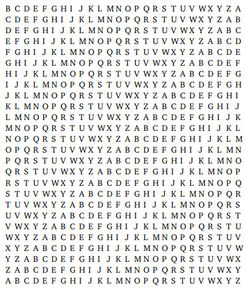

Alternative to transposition ciphers is substitution ciphers that act complementary to transposition. In transposition, each letter retains its identity but changes positions, whereas in substitution each letter changes its identity but retains its position. One of the earliest descriptions of encryption by substitution appears in the Kama Sutra written in the fourth century AD. It mentions mlecchita-vikalpa, the art of secret writing, was used to help women conceal details of their communication partners. One of the recommended techniques is to pair letters of the alphabet at random and substitute each letter in the alphabet with its partner.
The first documented use of a substitution cipher for military purposes appears in Julius Caesar’s Gallic Wars. Caesar sent a message to Cicero where the substitution replaced Roman letters with Greek letters, rendering the message useless if fallen into enemy hands. Caesar used secret writing frequently and came up with variations of substitution ciphers. The most famous and only documented substitution cipher he used is called the Caesar shift cipher. For this cipher, Caesar simply replaced each letter in the message with the letter 3 places further down the alphabet. In other words, it shifted the alphabet three letters. Although it is mentioned that he uses a shift of 3, any shift between 1 and 25 generates 25 distinct ciphers.
Despite the success of these types of ciphers throughout history, simple monoalphabetic substitution ciphers are easy to break with time and the proper techniques. The brute force method or trial and error could be used to break the Caesar cipher and application of frequency analysis in most other cases. Because of these weaknesses, stronger substitutions ciphers were developed. These ciphers were known as polyalphabetic ciphers that use multiple substitution alphabets.
The first known polyalphabetic cipher created was the Alberti Cipher that used a mixed alphabet for encryption, which would switch to a different ciphertext alphabet at random points in the text. These points were marked in the code by an uppercase letter and keys were encoded on sets of cipher discs. Building on this work, the Vigenere Cipher was created. It is the most well known polyalphabetic substitution cipher. It made use of up to 26 different ciphertext alphabets and remained ‘The Unbreakable Cipher’ until 1854.
Today, even the strongest substitution code wouldn’t stand up to five minutes of intense hacking. However, they did pave the way for the development of contemporary methods of encryption and cryptographic analysis. For example, the concepts of modular arithmetic and residues were added to create the Affine Shift Cipher. Cryptography uses the concept of continuous improvement by analyzing strengths and weaknesses of ciphers. Meaning each new cipher builds off the previous one trying to improve upon the weaknesses and build up the strengths.
A simple shift cipher is one of the easiest methods to use in cryptography. The advantages of using a shift cipher over other methods include: The use of only a short key in the entire process; Very easy to implement in a program using your language of choice; And, require very few computing resources.
Although, a shift cipher's simplicity does bring with it some drawbacks. The security that a shift cipher provides is minimal, and can be easily cracked using frequency analysis. Frequency analysis is a technique where you examine the frequency of which certain letters appear in a ciphertext. For example, in the English language, the most frequent letters are E, T, A, and O. The most infrequent letters are Z, Q, and X. Also, the most common pairs, known as bigrams, of letters are TH, ER, ON, and AN. Lastly the most common repeat pairs are SS, EE, TT, LL, and FF. Knowing this, one could look at a cipher text phrase such as MJQQT BTWQI (HELLO WORLD) and notice the repeat pair QQ. This repeat pair is then most likely one of the common repeat pairs, so Q is either S, E, T, L, or F. Also, we can see that T is repeated in both words here, so it is safe to assume it is a vowel so your possibilities are slimmed down tremendously and would be easier to use a brute force approach.